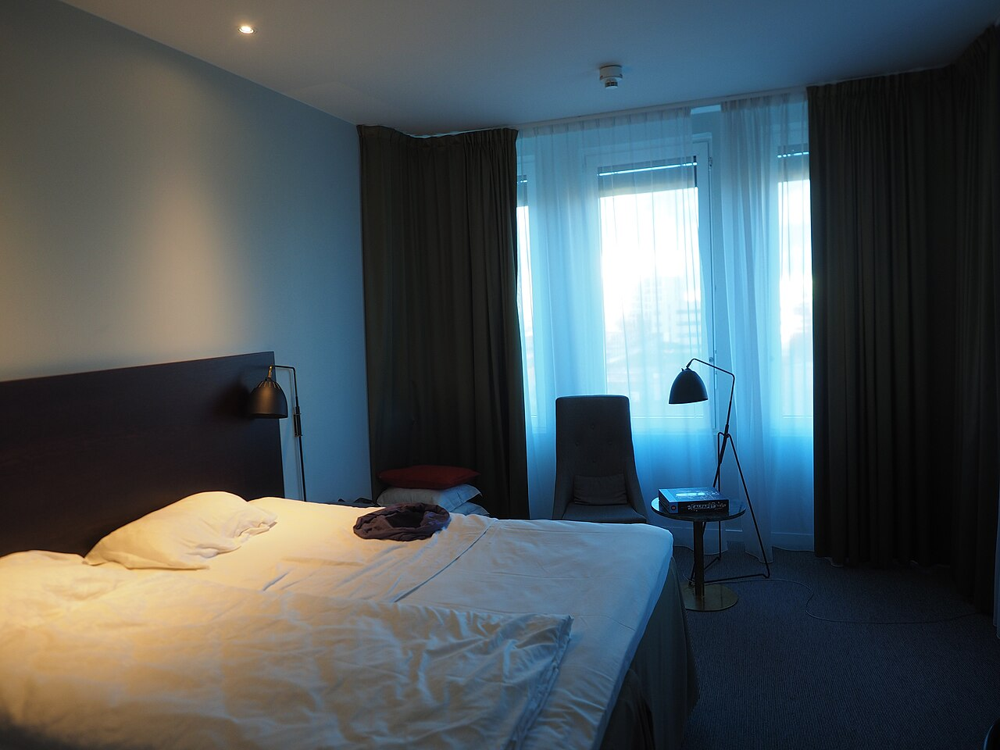

实景照片 · 来源 Wikimedia Commons（CC协议）
← 返回主计划
位置与交通
- 地址：浙江省绍兴市柯桥区柯南大道1758号
- 距东方山水乐园水公园：驾车约 12分钟 / 5.3km
- 紧邻：乔波冰雪世界（步行14分钟）、瓜渚湖（晨跑）、柯桥古镇约10分钟
- 上海自驾：约2小时；免费自助停车·充电桩
价格参考（国庆 9/30–10/4）
| 房型 | 平日/晚 | 国庆预估/晚 | 说明 |
|---|
| 标准房（含沙发床） | 约378起 | 约700–1100 | 凯悦品牌·硬件新 |
| 套房 | 约600–800 | 约1100–1400 | 可能超预算上限 |
4晚合计约 2800–4400（标准）。凯悦品牌舒适度≥亚朵。
特点与适合谁
👩 妈妈- 2025最新、凯悦标准
- 床大且软、干湿分离
- 机器人送外卖·花园酒吧
与南苑云荟的取舍
凯悦更新(2025)、品牌更高，但距东方山水12分钟（南苑5分钟）、且不紧贴柯桥古镇。若你更看重"最新+品牌"选凯悦；更看重"近玩水+近夜市"选南苑云荟。两者都比老金沙新。